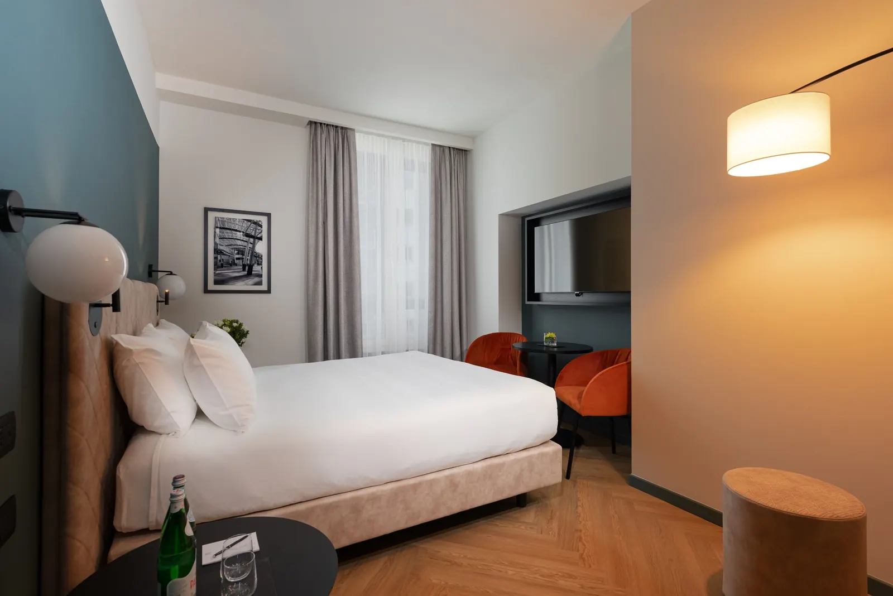

Hotel per il Gran Premio d'Italia di Formula 1 a Monza · Tocq Hotel Milano
Il Gran Premio a Monza. La sera a Milano.
Da Porta Garibaldi il treno per Monza parte senza cambi. Dopo la gara torni a Corso Como, mentre l'autodromo si svuota.
- 8,8/10Expedia · 973 recensioni
- 4,6/5Google
- 9,0/10posizione su Booking.com

Dal Tocq all'autodromo
Il treno parte a 5 minuti dall'hotel.
- Tocq Hotel MilanoVia Tocqueville 7/D
- 5 min a piedi
- Stazione Porta Garibalditreni per Monza
- Treno · 12–17 minS8, S11 o regionale, senza cambi
- Monzastazione
- Navettafino all'ingresso
- Autodromo NazionaleGate G
Nel weekend del Gran Premio Trenord aggiunge treni diretti da Porta Garibaldi a Biassono-Lesmo Parco, a circa 10 minuti a piedi dall'autodromo. Nel 2026 la domenica c'erano 21 treni in più e un biglietto treno più navetta a 10 euro andata e ritorno. Le corse 2027 non sono ancora pubblicate.
Calendario Autodromo di Monza
Il weekend della Formula 1.
Il pulsante apre la prenotazione per tutto il weekend del Gran Premio, dal venerdì al lunedì mattina.
- Settembre 2027
- Formula 1 Gran Premio d'Italia 2027weekend Sprint (14° round)Prenota le notti
Date dalle fonti ufficiali (organizzatori, Regione Lombardia), aggiornate al 2026-10-26. Controlla sempre il sito dell'evento prima di partire.


Il weekend in autodromo
Si parte presto, si torna tardi.
- Colazione
- Da asporto dalle 5:30, per arrivare all'apertura dei cancelli
- La camera
- Silenziosa sul lato corte, per dormire fra una giornata e l'altra
- Check-out
- Flessibile la mattina dopo la gara
- La domenica
- Le valigie restano alla reception fino a sera
- Il rientro
- Reception 24 ore e guardia notturna all'ingresso
- Per ripartire
- Malpensa Express da Garibaldi, Centrale a due fermate di metro
Lo dicono gli ospiti
Le domande che ti fai, le risposte di chi c'è stato.
È comodo per gli eventi?
"The location for travelling to the venues was outstanding."
Riesco a dormire?
"Due club vicini e tanto movimento il sabato sera, ma la camera era isolata: i rumori dalla strada non hanno disturbato il sonno."
Ci tornerei?
"È sempre la mia scelta a Milano: il mio hotel preferito, lo staff è il migliore."
Il confronto
Dormire a Monza, o dormire a Milano?
| Hotel a Monza | Tocq Hotel Milano | |
|---|---|---|
| Per arrivare all'autodromo | Navetta o a piedi | Treno senza cambi, poi navetta o treno speciale |
| La sera | Una città piccola, piena di tifosi | Corso Como a un minuto, Corso Garibaldi a cinque |
| Il giorno della partenza | Treno per Milano o taxi | Malpensa Express da Garibaldi, Centrale in metro |
| Se resti un giorno in più | Milano in treno | Milano è fuori dal portone |
Domande frequenti
Prima di prenotare per il Gran Premio.
La reception risponde 24 ore su 24: +39 02 62071.
Come arrivo all'Autodromo di Monza dal Tocq Hotel Milano?
Ci sono treni speciali nel weekend della Formula 1?
Quando è il Gran Premio d'Italia 2027?
Conviene andare in auto?
Posso fare colazione prima di andare in autodromo?
Posso lasciare le valigie la domenica dopo il check-out?
Gran Premio d'Italia · Tocq Hotel Milano
Il weekend del Gran Premio Milano è piena mesi prima.
Hai il biglietto? Prenota il weekend adesso. Con Direct Flex cancelli gratis fino a 24 ore prima.